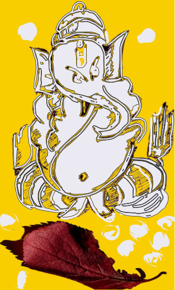

Mathura was the geographic center of Bharata — the ancient India that included most of South Asian region - sometimes also called greater India. It was also the physical origin of auspicious scriptures - Vedas; and the mass adoption of the written-word, post Neolithic 1 revolution. Mahabharta was scribed here - in a series of eighteen Parvas (books). Mahabharata literally means "greater India".
The legend says Mahabharata was too big to scribe for humans! Thus the first writer poet - Krishna Dwaipayana summoned help from Ganesa - the elephant God [picture above]. In Hindu mythology, Ganesa is considered embodiment of "intelligence". He is also known as vighn vighnesh - the biggest problem solver - on account of his super natural intelligence - almost like (still elusive) "artificial general intelligence".
‘Text’ was the new medium. It was somewhat similar to our migration from analog to digital. Not only did it demand new "scribing" skills, it also meant the populations must learn to "read" - beyond a select class of teachers or sages. New tools such as Pen, Ink and Palm leaves were invented; just the way we needed mass adoption of computers in early nineties. Divine intelligence Ganesa was invoked to usher the humanity into this new era, just the way we are using "large language models" in current digital realm. It isn't hard to imagine that "AI" would scale new heights of concious experience in the same manner as "text" segregated humans from the animals and forest dwellers.
The written word commanded as much attention back then as the "code" in our times. Which meant iterative rigor to precipitate the words into immaculate verses - such that the message stayed in the human cache. The upfront effort to organize scribing paraphernalia (palm leaves, ink etc) was an entry barrier. It justified that the text must be accurate, succinct and comprehensible.
In the very first book, Mahabharata is described as the cumulative "history" of that time, that got to it's current state in over six hundred years. It was like the Wikipedia of that time except it was also poetry of extraordinary caliber. Every king, every invention of value, must find it's due place in Mahabharata, but in a fashion that was both - readable and sonorous. The superfluous vastness of current (digital) information store, on the other hand, necessitates that a new conscious form must replace humans. Or humans amalgamate with AI tools. Good or bad ? - only time shall tell!
Any major paradigm shift, mandates an order of magnitude improvement. There was an all around effort to reduce the cost while increasing the utility. It wasn't that no one knew scribing before, but the written word was pegged to the cave walls. Like murals or wall carvings, text was written on human size scales. Instead of chiseling, they used colors to paint the messages. Large paintings and books were of the same measure, and medium. An artist could afford to spend an year on a painting, but spending that much effort on a single page of a scripture was hell of an effort. Even if someone willing to spare the time and effort, the language model and calligraphy weren't mature enough to capture the essence of the spoken words.
In an estimate, a hundred page book, painted on human size frames back then, used to cost a gold 2 coin. The goal was to bring the cost down to a silver coin (100x reduction). A 10x reduction in size plus a 10x improvement in transcription tools led to a 100x reduction in cost - in a matter of less than a century. Does it sound like our journey from mainframes to the smartphone?
What motivations led to this major step-up in our approach to preservation of information? Why would someone take the pains to poetically scribe entire history? How was wisdom drawn off the history and more importantly, how was this wisdom tested for truth before putting into text?
Following pages are a filtered version of my research investigating that revolution. And surprisingly, it made a fascinating story! They also answer one question that stayed longer on my mind — Why should one care for the pen and the paper? What value in spending cycles on the tools of a bygone era! Turned out, our challenges and moral dilemmas are not very different from that time! The essence of a "paradigm shift" is more or less similar. There is a lot to learn!
notes and stuff
Neolithic revolution:- Around 11,000 bc, after the last long winter ended, our ancestors discovered agriculture, pottery, mining and other skills that lay in the foundations of modern society. This revolution with tools and technology and a zeal to do better faster is called Neolithic (new stone age) revolution. There is a debate among historians as to how long it lasted but the general consensus is anywhere between 10000 bc to 5000 bc , right before the times of Mahabharata. -> Ref
Monetary and measurement system :- It appears that both the systems evolved hand in hand. Gold was the basis of both the monetary and the measurement systems. No one knows for sure when gold mining begin. Our current estimates are around 4000 BC. That puts it around the same time as Mahabharata. The frequent mention of Gold ornaments among kings and deities and as jewellery among women during the times of the epic, indicate usage of Gold as a scarce but in-fashion store of value. -> Ref
- In Mahabharata, there is a clear mention of gold coins being abundantly used. In fourth book -
Viarata Parva, the princeUttaraofferedArjuna(disguised as a transgender namedVrihnnala) a hundred gold coins for saving him (and his bovine wealth) fromKaurvas-> Ref . - There is evidence of countable units of precious metal being used for exchange from the Vedic period onwards. A term
Nishkaappears in this sense in theRigveda. A unit calledŚatamāna, literally a " hundred standard ", representing 100krishnalasis mentioned inSatapatha Brahmana. A later commentary onKatyayana Srautasutraexplains that aŚatamānacould also be 100Rattis. ARattiis the weight equal to seeds of Abrus Precatorius. A hundred of them are almost equal to aTolathat is used for gold trade todate in India. All these units referred to gold currency in some form but they were later adopted to silver currency. -> Ref - Barter system was widespread for the smaller transactions. Commoners used fruits and grains to get what they needed. Rich people used copper as a store of value. A one time adult meal was normally considered one copper coin. So was a ride fare. You could hop on and hop off any boat or cart at any place along its route for one copper coin. Super rich used copper for utensils at their home. For them the valuable was silver. A silver coin was considered same as hundred copper coins. Ultra rich ate their food in Silver utensils. For them store of value was a Gold coin.
- A Gold coin was equal to hundred Silver's. The valuation was based on rough order of rigor in mining these metals. Silver was considered hundred times harder than copper, and Gold being similar orders of magnitude harder than Silver. In a way "proof of work" was baked in universally acceptable currency.
- All states, no matter what their political equations, honoured this simple "proof of work" based storage of value. Privacy , self custody and universality were the underpin of trading system. Currency was owned by people NOT kingdoms! It is a well established fact that after the great war of
Mahabharta, sixteen main kingdoms (mahapadas) got formed over couple of centuries. Each one of them issued their own coins but they were all different shapes or stamps on gold coins. Quarter gold coins (Svarna) are excavated fromGandhara-> Ref - Currency was pegged to people's trust in "proof of work". Important point to note here, currency was not pegged to commodities such as iron or wheat. Gold and silver were NOT treated as commodities. Gold's only purpose was ornaments and silver was used purely for minting. Copper was primarily used for making utensils for the rich. Copper was supposedly the best metal to store food and water. Eating in silver, though common for rich, was considered a show-off.
- This simple to understand and time tested system of powers of ten, was later exploited by
Aryabhattato conceptualize zero and decimal system - the very basis of modern arithmetic. The seeds of Abrus precatorius (Ratti) being very consistent in weight were used to weigh Gold using a measure where 8 Ratti = 1 Masha; 12 Masha = 1 Tola (12 X 8 = 96 Ratti), or roughly equal to 100 Ratti ( 96 Ratti pure gold and 4 Ratti impurities to solidify the gold). In other words, aTola's"weight unit" was 100 Ratti while it's "price unit" was 96 Ratti. In simple calculations 10 grams (one Tola) of solid gold was worth one kilo of solid silver or hundred kilos of solid copper. Or one Ratti (tiny seed) of Gold was equal to one kilo of copper. - The common word used for one Kilo was
SerorSeer- roughly equal to 1.07 kilos in weight units or volume wise roughly equal to one liter. Volume was a preferred way to exchange at a larger scale to weed out as much impurities as possible from molten the metals.